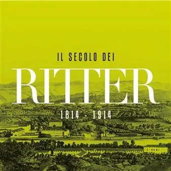

da sab 24 ott a lun 29 mar
Il secolo dei Ritter (1814-1914. Una famiglia di industriali nella Gorizia dell'Ottocento
Industriali, commercianti, innovatori e benefattori: per oltre un secolo i Ritterde Záhony furono protagonisti della vita economica e sociale di Gorizia, contribuendo alla sua trasformazione in un moderno centro industriale. Arrivati in città all’inizio dell’Ottocento…
 Indicazioni
Indicazioni
- Costi e prenotazioni
- Costo non indicato · Prenotazione non indicata
- Programma
- Programma da verificare. Apri la fonte ufficiale per orari e possibili aggiornamenti.
- In caso di maltempo
- Nessuna indicazione specifica pubblicata.
- Note
- Acquisito automaticamente dalla fonte.
L’EVENTO
Descrizione completa
Industriali, commercianti, innovatori e benefattori: per oltre un secolo i Ritterde Záhony furono protagonisti della vita economica e sociale di Gorizia, contribuendo alla sua trasformazione in un moderno centro industriale.
Arrivati in città all’inizio dell’Ottocento, svilupparono attività che spaziavano dalla raffinazione dello zucchero alla produzione tessile, dai mulini alla cartiera, fino all’agricoltura. Promossero l’arrivo della ferrovia, guidarono la Camera di Commercio, ricoprirono incarichi politici e sostennero importanti iniziative nel campo dell’istruzione, dell’assistenza sociale e della beneficenza.
Ma quella dei Ritter è anche una storia di palazzi e giardini, collezioni d’arte e di antichità, musica e cultura, che ha lasciato numerose tracce a Gorizia e nel territorio circostante.
Attraverso dipinti, fotografie, documenti, oggetti personali e testimonianze provenienti dalle collezioni Coronini e da importanti musei, archivi e biblioteche della Regione, la mostra ripercorre la straordinaria vicenda di una famiglia che ha segnato un intero secolo di storia goriziana, fino allo scoppio della Grande Guerra.
Un'occasione per riscoprire Gorizia attraverso la storia di una delle famiglie che più hanno contribuito al suo sviluppo
La mostra sarà visitabile dal 24 ottobre 2026 al 29 marzo 2027, nei seguenti orari:
da mercoledì a venerdì 10,00-13.00/15.00-18.00
sabato, domenica e festivi 10.00-13.00/14.00-18.00
Tariffe:
Intero: € 6,00
Ridotto: (studenti) € 4,00
Gratuito; bambini fino ai 10 anni, persone con ridotte capacità psico-motorie + 1 accompagnatore, giornalisti
Supplemento visita guidata € 3,00 (per gruppi, previa prenotazione): info@coronini.it
Per maggiori informazioni: info@coronini.it
IL PROGRAMMA
Programma e orari
Appuntamenti raccolti dalle fonti elencate. Dove manca un orario, non è ancora disponibile in questa scheda.
Programma pubblicato
- Dal 2026-10-24 al 2027-03-29
INFORMAZIONI UTILI
Prima di partire
- Controllare la fonte prima di partire.
ORGANIZZAZIONE